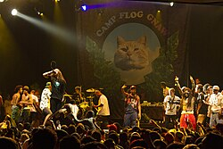
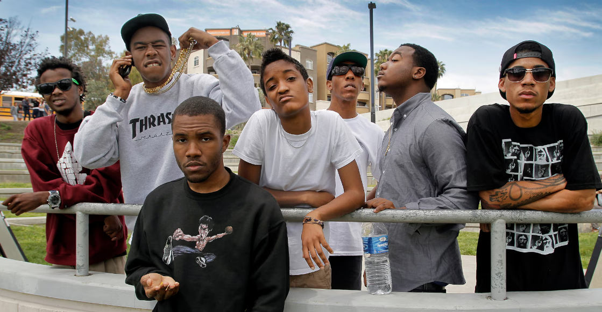

Odd Future Wolf Gang Kill Them All (frecuentemente abreviado como OFWGKTA y más conocido como Odd Future) fue un grupo de hip-hop alternativo formado en Los Angeles en el año 2007.
| Datos generales | ||
|---|---|---|
| Origen | Los Angeles, California. Estados Unidos | |
| Estado | Disuelto | |
| Información artística | ||
| Genero(s) | Hip-Hop Hip-Hop Alternativo West Coast Hip-Hop |
|
| Período de actividad | 2007 - 2015 | |
| Discografias | Odd Future Récords | |
| Artistas relacionados | Trash Talk | |
Los miembros originales fueron Tyler, the Creator, Casey Veggies, Hodgy, Left Brain, Matt Martians, Jasper Dolphin, Travis "Taco" Bennett y Syd. Posteriormente, se unieron Brandun DeShay, Pyramid Vritra, Domo Genesis, Mike G, Earl Sweatshirt, L-Boy, Frank Ocean y Na-Kel Smith.

En mayo del 2015, Tyler the Creator publicó en Twitter que el grupo había llegado a su fin.Ese mismo día, Earl Sweatshirt publicó un par de mensajes en la misma plataforma en los cuales confirmaba el rumor de que el colectivo terminaba.
Odd Future fue un colectivo de hip hop y no una entidad individual que recibiera premios como tal. Sin embargo, sus miembros, Tyler, the Creator, Earl Sweatshirt, Frank Ocean, y otros, han obtenido reconocimientos individuales, y han sido reconocidos en el mundo de la música, la moda y el arte.
